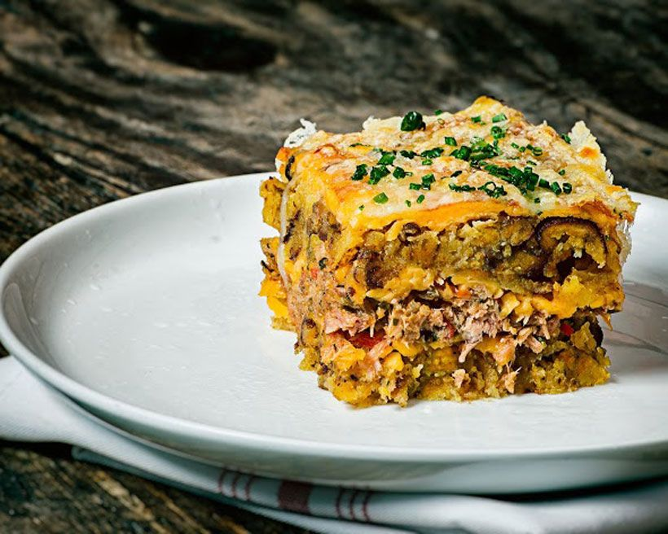

Pastelon

Description
Pastelon is a traditional Puerto Rican and Dominican recipe. The best way to think of it is as the Carribean lasgna. The main ingredient is the Carribean staple plantains, which can be found in many Carribean dishes.
Ingredients
- 1 pound lean ground beef
- Tomato sauce
- Sofrito
- Green olives
- Crushed garlic
- Salt
- Recao
- Dried oregano
- Cooking spray
- Vegetable oil
- 6 large ripe plantains
- 5 large eggs
- Green beans
- Shredded mozarella cheese
Steps
- Heat a large skillet over medium heat and add ground beef
- Stir until browned on outside and remove meat from pan
- Place tomato sauce, sofrito, green olives, garlic, 1/2 teaspoon salt, recao, and oregano in the skillet.
- Cook and stir over medium-low heat for 5 minutes. Return ground beef to skillet; reduce to a simmer. Cook, uncovered and stirring occasionally, for 15 minutes more.
- Preheat oven to 350 degrees F (175 degrees C). Spray an 8x8-inch baking pan with cooking spray.
- Pour oil into a large skillet over medium-high heat to 350 degrees F (175 degrees C). Fry plantain slices until golden, 3 to 5 minutes per side. Drain on paper towels.
- Beat eggs thoroughly in a bowl; add 1/2 teaspoon salt.
- Line the bottom of the baking pan with half the plantains, overlapping as needed. Layer ground beef mixture, green beans, and remaining plantains; pour eggs on top. Top with mozzarella cheese.
- Bake in the preheated oven until eggs are set and cheese is melted, 20 to 25 minutes.